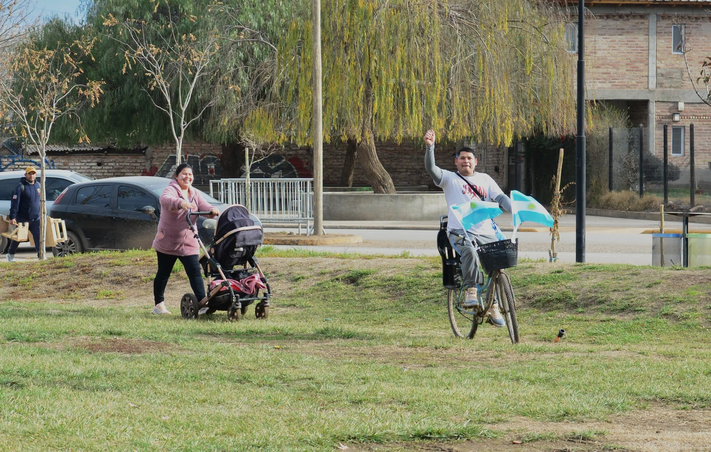
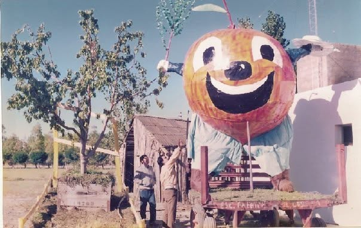
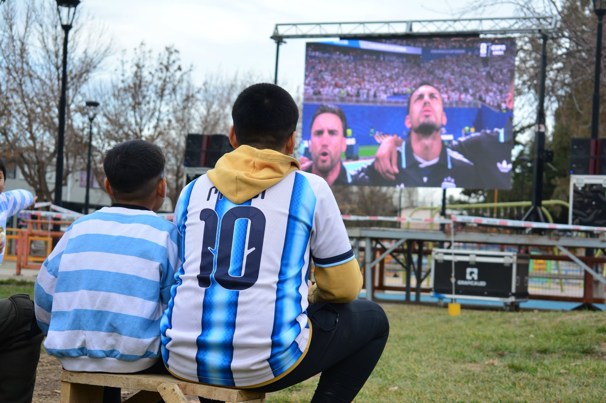
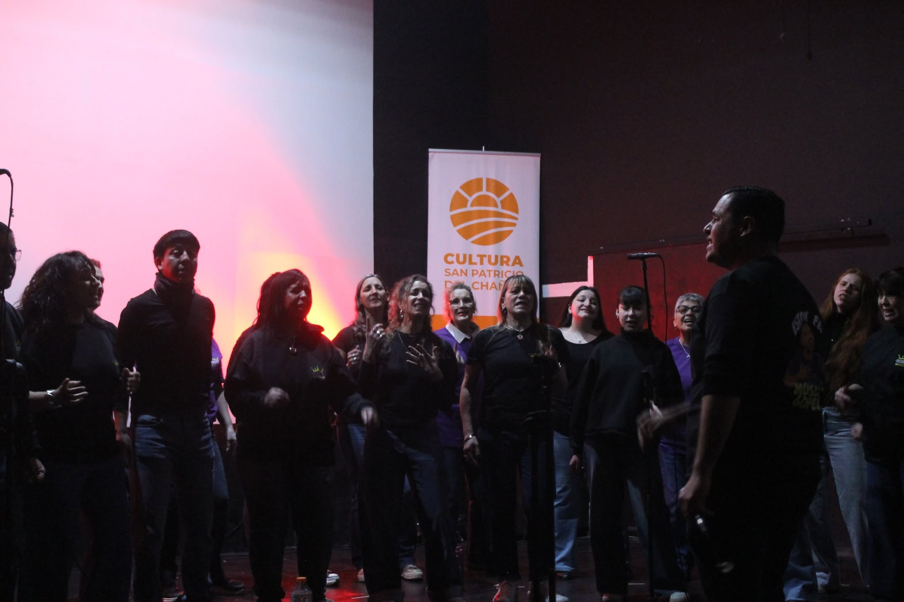

OCARINA PRODUCCIONES
NEUQUÉN · ARGENTINA
CULTURA · HISTORIA · TERRITORIO
Contamos lo que somos.
Producción audiovisual y comunicación para historias, personas, lugares y proyectos que merecen ser vistos.
PRODUCCIÓN · REGISTRO · COMUNICACIÓN
SAN PATRICIO DEL CHAÑAR
OCARINA
Una productora con territorio.
Ocarina nace desde el territorio para contar historias reales.
Trabajamos con imagen, sonido, fotografía, video y comunicación para transformar experiencias en contenidos.
Nuestro foco está en la cultura, las comunidades, el patrimonio, la identidad y los proyectos que construyen territorio.
UNIVERSO OCARINA
Cinco puertas para explorar.
Memoria, cultura, territorio, turismo y documentación.
01
MEMORIA
EXPLORAR →
02
Recuerda
Historias, fotografías, personas y memoria comunitaria.
IDENTIDAD
EXPLORAR →
03
Cultura
Artistas, música, patrimonio y expresiones culturales.
TURISMO
EXPLORAR →
04
Descubre
Paisajes, experiencias, lugares y propuestas.
TERRITORIO
EXPLORAR →
05
Mapa
Lugares, recorridos, patrimonio y territorio.
DOCUMENTACIÓN
EXPLORAR →
Archivo
Fotografías, audios, documentos y registros.
PRODUCCIÓN AUDIOVISUAL
Ideas que se convierten en contenido.
Producciones pensadas para comunicar, documentar y generar valor.


RADIO
Radio Cadena Oasis 92.5
Información, comunidad, música y compañía desde San Patricio del Chañar.
● TRANSMISIÓN EN VIVO
OASIS
RADIO OCARINA · LISTO
FM Oasis 92.5
Presioná reproducir para escuchar.
NUESTRA MIRADA
No queremos solamente producir contenido. Queremos dejar registro.
Ocarina combina producción audiovisual, comunicación y territorio para crear contenidos que tengan una razón de existir más allá de una publicación.
HABLEMOS
¿Tenés una historia, proyecto o idea?
Contanos qué necesitás y evaluamos juntos la mejor forma de producirlo.